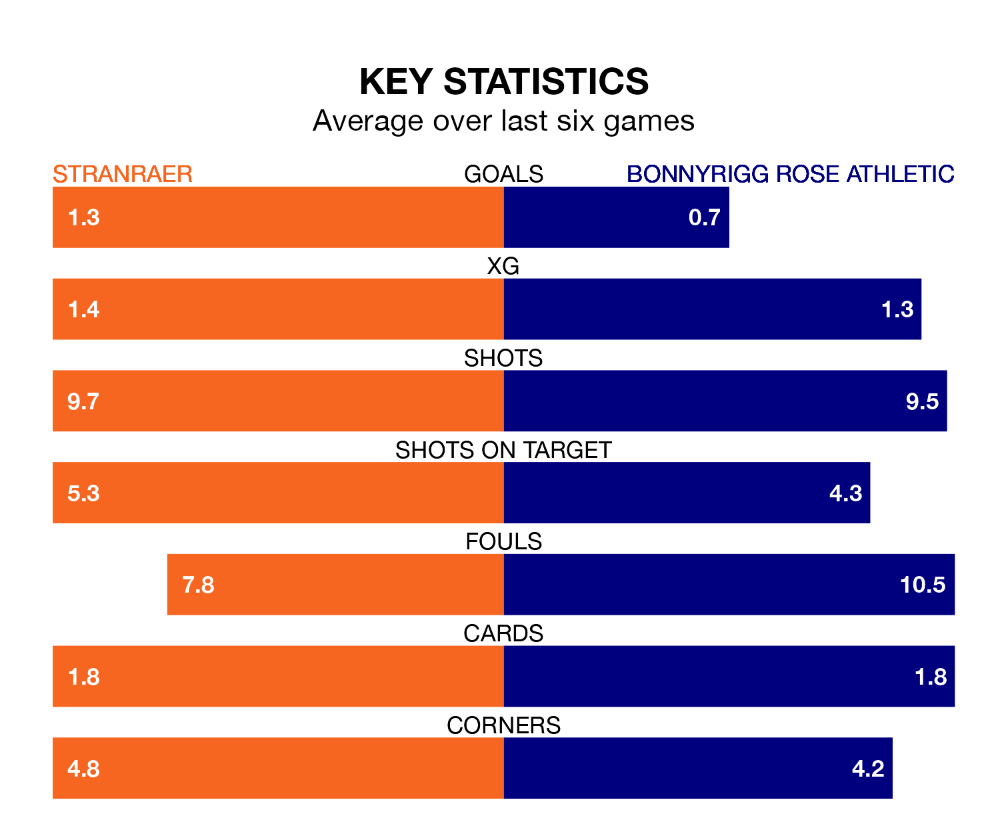

Saturday's match at Stair Park sees two relegation candidates play each other, as ninth-ranked Stranraer host eighth-placed Bonnyrigg Rose Athletic.
Stranraer have picked up 30 points from their first 30 League Two games, with eight wins and six draws.
That is the same number of points as Bonnyrigg Rose have collected, having won seven and drawn nine.
Stranraer are in bad form in League Two, with one win and a draw from their last six games.
But with no wins and a draw over that period, Bonnyrigg Rose's form is even worse – they have taken one point from 18, compared to the home side's four.
In the last 10 years, Stranraer and Bonnyrigg Rose have played each other on seven occasions. Stranraer won one of them, Bonnyrigg Rose three, and they drew three times.
On average, Stranraer scored 1.1 goals and Bonnyrigg Rose 1.3 in those matches.
Their last meeting was on February 3, when they played out a 0-0 draw.
In Neil Martyniuk, Athletic have one of the league's sharpest shooters so far this season. He has notched 10 goals in 28 appearances, to sit fourth in the scoring charts.
His goal rate of one every 246 minutes is slightly quicker than that of Thomas Orr, Stranraer's top scorer with a goal every 258 minutes, and a total of five goals in 24 games.
With 35 goals in 30 games so far this season, Stranraer are scoring at below the league average rate with 1.2 goals per game. And they are conceding more than average, letting in 49 goals at a rate of 1.6 per game.
The visitors are also below average scorers, with 1.2 goals per game, compared to a league average of 1.3. They have conceded 1.4 goals per game.
Stranraer's last match was on March 23, a 2-1 loss against East Fife, with Matthew Grant getting the goal for Stranraer.
Bonnyrigg Rose lost 2-0 against Dumbarton last time out, also on March 23.
Updated: 12:39 (UTC), 26/03/24